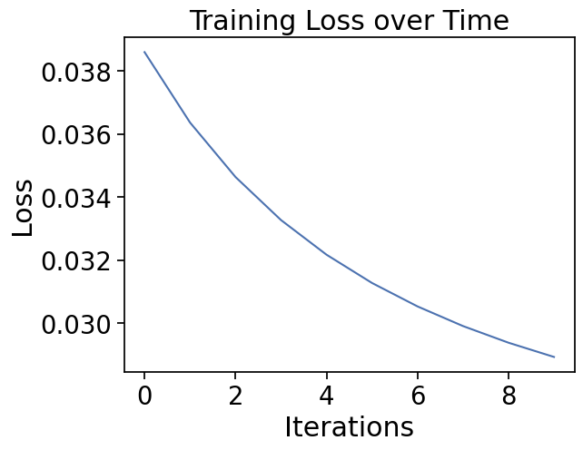
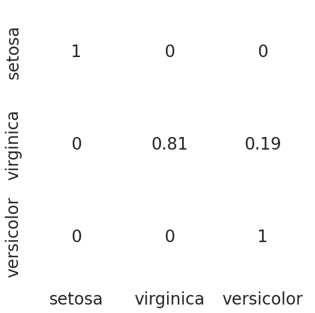

import numpy as np
import pandas as pd
import seaborn as sns
import matplotlib.pyplot as pltImplementation of a Neural Network for Iris dataset classification
This notebook implements a multilayer neural network for classifying flower species in the Iris dataset.
The code is modularized into functions to facilitate understanding and step-by-step execution.
Introduction
In this lab we build a simple Neural Network, implementing every fuunction from scratch.
The problem to be solved is the identification (classification, prediction) of the species of an Iris flower using the dimensions of the petals and the sepals. The Iris dataset we will use was introduced by R.A. Fisher to illustrate his works on Linear Discriminant Analysis.
We will follow a sequence of steps that align well with the process of building and validating a ML model.
- The first part, does not have to do with the model but with the data preparation for modelling
- Next we build the functions for the NN and train in
- Finally the prformance of the model is checked with the test data
Many of the functions are available in high level libraries -like Tensorflow, Scikit-Learn or Caret- but, for illustration purposes they will be written from scratch.
Importing libraries
Load and preprocess data
Reading the data
#read data from csv
iris = pd.read_csv("data/IrisData1.csv")
selected_rows = [0, 1, 50, 51, 100, 101]
print(iris.iloc[selected_rows]) Sepal_Length Sepal_Width Petal_Length Petal_Width Species
0 5.1 3.5 1.4 0.2 Iris-setosa
1 4.9 3.0 1.4 0.2 Iris-setosa
50 7.0 3.2 4.7 1.4 Iris-versicolor
51 6.4 3.2 4.5 1.5 Iris-versicolor
100 6.3 3.3 6.0 2.5 Iris-virginica
101 5.8 2.7 5.1 1.9 Iris-virginicaDataset verification
A standard step in the Data Analysis pipeline is to check the data, in order to detect possible wrong or problematic values such as missing data, outliers, mistakes (ex. negative length) etc.
While this is very context dependent a function to automate the checking is defined and applied below.
#Check the dataset to make sure no data is missing and Check the class labels
def verify_dataset(data):
#if any of the rows have missing value return datas missing
data_found = 1
for each_column in data.columns:
if data[each_column].isnull().any():
print("Data missing in Column " + each_column)
#if any rows are not missing return Dataset is complete. No missing value
quit()
if data_found == 1:
print("Dataset is complete. No missing values. Ok")
return
verify_dataset(iris)Dataset is complete. No missing values. OkOne hot encoding function
In the Iris dataset, the target variable Species consists of three categorical classes:
- Iris-setosa
- Iris-versicolor
- Iris-virginica
Machine learning models, especially neural networks, require numerical inputs. However, categorical values like "Iris-setosa" cannot be directly used in mathematical computations. In cases like this a common strategy is tio use one_hot encoding
One-hot encoding is a technique used to convert categorical labels into a numerical format that can be processed by machine learning models. In this method, each category is represented as a binary vector where only one element is 1, and all others are 0.
One-hot encoding transforms them into numerical representations like:
| Species | One-Hot Encoding |
|---|---|
| Iris-setosa | [1, 0, 0] |
| Iris-versicolor | [0, 1, 0] |
| Iris-virginica | [0, 0, 1] |
This ensures that the model does not assign an ordinal relationship between categories (e.g., assuming Iris-virginica > Iris-setosa if labeled as 0,1,2).
#This function accepts an array of categorical variables and returns the one hot encoding
def to_one_hot(Y):
n_col = np.amax(Y) + 1 # Determine the number of unique classes
binarized = np.zeros((len(Y), n_col)) # Create a matrix filled with zeros
for i in range(len(Y)):
binarized[i, Y[i]] = 1.
return binarizedData normalization function
The training of many ML models, like ANNs, can be negatively affected by input features with different scales. Some of the problems this can yield are: - Features with larger numerical ranges can dominate smaller ones, leading to biased weight updates in the model. - Gradient-based optimization methods (like gradient descent) converge faster when input features are on a similar scale. - Large values may lead to computational issues such as vanishing or exploding gradients.
This is typically achieved by transforming the data so that all features have comparable scales, ensuring they contribute equally to a machine learning model. Normalization can be applied column-wise (scaling each feature independently) to preserve relationships among variables, or row-wise (scaling each observation to unit length), which is useful when working with directional vectors.
The original version of this lab provided a row-wise normalization that puts all values on the same scale, but affects the relation among variables. Instead, we are going to use column-wise normalization
In this case, we apply column-wise normalization because the features represent absolute measurements of floral organs, not unit vectors or directional data. This ensures that the relationships among features are maintained while preventing differences in scale from affecting the learning process.
# Row-wise normalization function. Removed
def normalize(X, axis=-1, order=2):
l2 = np.atleast_1d(np.linalg.norm(X, order, axis))
l2[l2 == 0] = 1
return X / np.expand_dims(l2, axis)# Column-wise normalization
# def normalize(X, axis=0, order=2):
# Compute the L2 norm for each column (axis=0)
# l2 = np.atleast_1d(np.linalg.norm(X, order, axis))
# Prevent division by zero by setting zero norms to 1
# l2[l2 == 0] = 1
# Normalize each column dividing it by its respective L2 norm
# return X / np.expand_dims(l2, axis)Running the preprocessing steps
Data normalization
If column wise normalization is applied, it has to be done separately for train ans test sets If one applies row wise normalization it can be done on all data.
In order to keep with the original lab we apply row-wise normalization
Selecting features and transforming dataframe into aray
# Subset the dataset keeping only numeric features
selected_features = {
"Sepal_Length": True,
"Sepal_Width": True,
"Petal_Length": True,
"Petal_Width": True
}
# Keep only selected features
x = iris.loc[:, [col for col, include in selected_features.items() if include]]
x = x.to_numpy() # Change data from Pandas Dataframe to numpy array
print(iris.iloc[selected_rows]) Sepal_Length Sepal_Width Petal_Length Petal_Width Species
0 5.1 3.5 1.4 0.2 Iris-setosa
1 4.9 3.0 1.4 0.2 Iris-setosa
50 7.0 3.2 4.7 1.4 Iris-versicolor
51 6.4 3.2 4.5 1.5 Iris-versicolor
100 6.3 3.3 6.0 2.5 Iris-virginica
101 5.8 2.7 5.1 1.9 Iris-virginicax = normalize(x)
print(x[selected_rows])[[0.80377277 0.55160877 0.22064351 0.0315205 ]
[0.82813287 0.50702013 0.23660939 0.03380134]
[0.76701103 0.35063361 0.51499312 0.15340221]
[0.74549757 0.37274878 0.52417798 0.17472599]
[0.65387747 0.34250725 0.62274045 0.25947519]
[0.69052512 0.32145135 0.60718588 0.22620651]]Applying one hot encoding
#Replace the species with 1,2 or 3 as appropriate
label_dict = dict()
label_dict['0'] = 'setosa'
label_dict['1'] = 'virginica'
label_dict['2'] = 'versicolor'
iris['Species'].replace(['Iris-setosa', 'Iris-virginica', 'Iris-versicolor'], [0, 1, 2], inplace=True)
#Get Output, flatten and encode to one-hot
columns = ['Species']
y = pd.DataFrame(iris, columns=columns)
y = y.to_numpy()
y = y.flatten()
y = to_one_hot(y)
print(y[selected_rows])[[1. 0. 0.]
[1. 0. 0.]
[0. 0. 1.]
[0. 0. 1.]
[0. 1. 0.]
[0. 1. 0.]]Test-Training split function
Before we can train the model we will need to split the data in train and tests
x_y = pd.DataFrame(np.concatenate((x,y), axis=1))
def split_dataset_test_train(data,train_size):
data = data.sample(frac=1).reset_index(drop=True)
training_data = data.iloc[:int(train_size * len(data))].reset_index(drop=True)
testing_data = data.iloc[int(train_size * len(data)):].reset_index(drop=True)
return [training_data, testing_data]Split the data
np.random.seed(123456)
train_test_data = split_dataset_test_train(x_y,0.7)
X_train = train_test_data[0].iloc[:,0:4].to_numpy()
X_test = train_test_data[1].iloc[:,0:4].to_numpy()
y_train = train_test_data[0].iloc[:,-3:].to_numpy()
y_test = train_test_data[1].iloc[:,-3:].to_numpy()
print(X_train[selected_rows])
print(y[selected_rows])[[0.77381111 0.59732787 0.2036345 0.05430253]
[0.69594002 0.30447376 0.60894751 0.22835532]
[0.71366557 0.28351098 0.61590317 0.17597233]
[0.71576546 0.30196356 0.59274328 0.21249287]
[0.76467269 0.31486523 0.53976896 0.15743261]
[0.70779525 0.31850786 0.60162596 0.1887454 ]]
[[1. 0. 0.]
[1. 0. 0.]
[0. 0. 1.]
[0. 0. 1.]
[0. 1. 0.]
[0. 1. 0.]]#### Normalize test and train sets separately
# If column wise normalization is applied, it has to be done separately for train ans test sets
# If one applies row wise normalization it can be done on all data
# X_train = normalize(X_train)
# X_test = normalize(X_test)
# print(X_train[selected_rows])
# print(y[selected_rows])Save the data for later use
# Save data into a binary file
np.savez("iris_train_test_data.npz", X_train=X_train, y_train=y_train, X_test=X_test, y_test=y_test)
print("Dataset saved successfully as 'iris_train_test_data.npz'.")Dataset saved successfully as 'iris_train_test_data.npz'.Training process
The network is trained by a succession of forward and backward iteration steps, continuously adjusting the model parameters to minimize the error.
- Forward propagation: Computes the activations in each layer by applying weighted transformations and activation functions.
- Loss computation: Measures the difference between the predicted output and the actual target values.
- Backward propagation: Computes gradients by applying the chain rule to propagate the error backward through the network.
- Weight update: Adjusts the parameters using gradient descent or another optimization algorithm to reduce the loss in future iterations.
This process is repeated over multiple epochs until convergence or a stopping criterion is met.
Activation functions
def sigmoid(x):
return 1 / (1 + np.exp(-x))
def softmax(x):
expX = np.exp(x - np.max(x, axis=1, keepdims=True)) # Estabilidad numérica
return expX / np.sum(expX, axis=1, keepdims=True)Forward propagation
The network is trained by a succession of forward and backward iteration steps Forward propagation computes activations in each layer of the network.
- Hidden layer:
\[ Z_h = X W_0 + b_0 \] \[ A_h = \sigma(Z_h) = \frac{1}{1 + e^{-Z_h}} \]
- Output layer:
\[ Z_o = A_h W_1 + b_1 \] \[ A_o = \text{softmax}(Z_o) = \frac{e^{Z_o}}{\sum e^{Z_o}} \]
Where $ (x) $ is the sigmoid function and softmax converts the outputs into probabilities.
And \(A_h\) and \(A_o\) are respectively the hideen layer and output layer activations.
def forward_propagation(X, W0, b0, W1, b1):
Z_h = np.dot(X, W0) + b0
A_h = sigmoid(Z_h)
Z_o = np.dot(A_h, W1) + b1
A_o = softmax(Z_o)
return A_h, A_oBackpropagation
The error propagates backward to adjust weights using gradient descent.
- Error in the output layer:
\[ \delta_o = A_o - Y \]
- Error in the hidden layer:
\[ \delta_h = (\delta_o W_1^T) \cdot \sigma'(Z_h) \]
- Gradients to update weights:
\[ W_1 \gets W_1 - \eta (A_h^T \delta_o) \] \[ b_1 \gets b_1 - \eta \sum \delta_o \]
\[ W_0 \gets W_0 - \eta (X^T \delta_h) \] \[ b_0 \gets b_0 - \eta \sum \delta_h \]
Where $ ’(x) $ is the derivative of the activation function, here, the sigmoid function.
def sigmoid_deriv(x):
return x * (1 - x)
def backpropagation(X, Y, A_h, A_o, W1):
delta_o = A_o - Y
dcost_dah = np.dot(delta_o, W1.T)
delta_h = dcost_dah * sigmoid_deriv(A_h)
return delta_o, delta_h
def update_weights(X, A_h, delta_o, delta_h, W0, b0, W1, b1, learning_rate):
W1 -= learning_rate * np.dot(A_h.T, delta_o)
# b1 -= learning_rate * np.sum(delta_o, axis=0, keepdims=True)
b1 -= learning_rate * np.sum(delta_o, axis=0)
W0 -= learning_rate * np.dot(X.T, delta_h)
# b0 -= learning_rate * np.sum(delta_h, axis=0, keepdims=True)
b0 -= learning_rate * np.sum(delta_h, axis=0)
return W0, b0, W1, b1Initialization of weights and bias
Before training the network, weights and biases must be randomly initialized. For the hidden layer ($ W_0 $, $ b_0 \() and the output layer (\) W_1 $, $ b_1 $):
\[ W_0 \in \mathbb{R}^{n_{input} \times n_{hidden}}, \quad b_0 \in \mathbb{R}^{1 \times n_{hidden}} \] \[ W_1 \in \mathbb{R}^{n_{hidden} \times n_{output}}, \quad b_1 \in \mathbb{R}^{1 \times n_{output}} \]
Weights are randomly initialized to break symmetry in learning.
def initialize_network(input_size, hidden_size, output_size):
# Initialize the weights and biases of a neural network.
W0 = 2*np.random.random((input_size, hidden_size)) - 1 # Input -> Hidden weights
W1 = 2*np.random.random((hidden_size, output_size)) - 1 # Hidden -> Output weights
b0 = np.random.randn(hidden_size) # Hidden bias
b1 = np.random.randn(output_size) # Output bias
return [W0, b0, W1, b1]Neural network training
After setting the weights to their initial (usually random) values, the neural network is trained going through several iterations with all the data (epochs) where the output is computed by forward propagation and the difference among the output and the is true value is used to adjust the weights by backpropagating the error.
The process stops when convergence or a certain number of iterations is reached.
def train_neural_network(X_train, Y_train, epochs, learning_rate, batch_size, params):
W0, b0, W1, b1 = params # Unpack initial parameters
num_samples = X_train.shape[0]
# Calculate number of batches
num_batches = num_samples // batch_size
if num_samples % batch_size != 0:
num_batches += 1 # Include last batch if not evenly divisible
loss_history = [] # Track loss over epochs
for epoch in range(epochs):
for batch_idx in range(num_batches):
# Define batch range
batch_start = batch_idx * batch_size
batch_end = min(batch_start + batch_size, num_samples)
X_batch = X_train[batch_start:batch_end]
Y_batch = Y_train[batch_start:batch_end]
# Forward Propagation
A_h, A_o = forward_propagation(X_batch, W0, b0, W1, b1)
# Backpropagation
delta_o, delta_h = backpropagation(X_batch, Y_batch, A_h, A_o, W1)
# Weight update
W0, b0, W1, b1 = update_weights(X_batch, A_h, delta_o, delta_h, W0, b0, W1, b1, learning_rate)
# Compute loss every 100 epochs
if epoch % 100 == 0:
_, A_o = forward_propagation(X_train, W0, b0, W1, b1) # Evaluate full dataset
loss = -np.mean(Y_train * np.log(A_o + 1e-9)) # Avoid log(0)
loss_history.append(loss)
print(f"Epoch {epoch}, Loss: {loss:.4f}")
return [W0, b0, W1, b1], loss_history # Return trained parameters and loss historyTraining the network in practice
Load and prepare data
Data have been preprocessed elsewhere and they are ready to feed the network
# Load data from binary dataset
data = np.load("iris_train_test_data.npz")
# Extract data
X_train, y_train, X_test, y_test = data["X_train"], data["y_train"], data["X_test"], data["y_test"]
print("Dataset loaded successfully.")Dataset loaded successfully.Initialize the network and hyperparameters
Setting the weights defines the architechture of the network (assuming full connectivity).
We set:
- input layer: 4 nodes (we use 4 features to train the network)
- hidden layer: 5 nodes
- output layer: 3 nodes
Additionally we must set the values of the parameters that will be used for training
learning_rate = 0.01 batch_size = 10 epochs = 1000
input_size=X_train.shape[1]
hidden_size=5
output_size=3
np.random.seed(654321)
my_params = initialize_network(input_size, hidden_size, output_size)# params_rounded = [np.round(param, 3) for param in my_params]
# params_roundedlearning_rate = 0.01
batch_size = 10
epochs = 1000
loss_history = [] # Store errors during trainingTrain the network
Given the data, the parameters and the hyperparameters we can call the main training function.
trainedNet, loss_history = train_neural_network (X_train=X_train, Y_train=y_train,
epochs=epochs, learning_rate=learning_rate, batch_size=batch_size,
params=my_params)Epoch 0, Loss: 0.0386
Epoch 100, Loss: 0.0364
Epoch 200, Loss: 0.0346
Epoch 300, Loss: 0.0333
Epoch 400, Loss: 0.0322
Epoch 500, Loss: 0.0313
Epoch 600, Loss: 0.0305
Epoch 700, Loss: 0.0299
Epoch 800, Loss: 0.0294
Epoch 900, Loss: 0.0289Check model performance
import matplotlib.pyplot as plt
plt.plot(loss_history)
plt.xlabel("Iterations")
plt.ylabel("Loss")
plt.title("Training Loss over Time")
plt.show()
Evaluate network on test data
def evaluation(params, tst_set):
w0 = params[0]
bh = params[1]
w1 = params[2]
bo = params[3]
# First layer propagation
zh = np.dot(tst_set, w0) + bh
layer1 = sigmoid(zh)
# Second layer propagation
zo = np.dot(layer1, w1) + bo
layer2 = softmax(zo)
return layer2.argmax(axis=1) # Convert to class labelsy_pred = evaluation(trainedNet, X_test)y_actual = pd.Series(y_test.argmax(axis=1))
y_pred = pd.Series(y_pred)
cm = pd.crosstab(y_actual, y_pred).to_numpy()
cmarray([[14, 0, 0],
[ 0, 13, 3],
[ 0, 0, 15]], dtype=int64)if cm.shape[1]<3:
cm = np.concatenate((cm,np.zeros((3,3-cm.shape[1]))),axis=1)
cm_norm = np.array([cm[i][j]/cm[i].sum() for i in range(cm.shape[0]) for j in range(cm.shape[1])])
cm_norm = cm_norm.reshape(3,3)
import seaborn as sns
from matplotlib.colors import ListedColormap
df_cm = pd.DataFrame(cm_norm, index = ['setosa','virginica','versicolor'],
columns = ['setosa','virginica','versicolor'])
plt.figure(figsize = (6,6))
with sns.axes_style('white'):
sns.heatmap(df_cm,
cbar=False,
square=False,
annot=True,
annot_kws={"size": 20},
cmap=ListedColormap(['white']),
linewidths=0.5)
sns.set(font_scale=1.8)